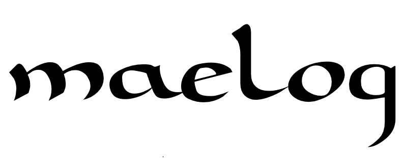

maglācos
-
Modern Gallaecian
This list is incomplete, and is sure to expand in the future. There are more words attested to be "Celtic", but they are either of Latin, French, or English origin separate from the Gallaecian and Bretonic Celtic languages.
• abanqueiro: 'waterfall' < *'(beaver) dam', formally a derivative in -arium of *abanco, Proto-Celtic *abankos 'beaver, water demon' cognate of Old Irish abacc 'dwarf', Welsh afanc 'beaver, dwarf', Breton avank 'dwarf, sea monster'. Akin also to Arpitan avans 'wicker'.
• abeneiro 'common alder', a derivative in -arium of *abona 'river', related to Breton aven, Welsh afon, Irish abha/abhainn 'river'.
• abrollar 'to sprout', from Celtic *brogilos 'copse'.
• arapende "arpent"; akin to Old Irish airchenn "end, extremity", Welsh arbenn "chief", erbyn "against", Cornish erbynn "id."
• álamo 'poplar tree', Germ. elma 'elm' (< *helHm-o), Celtic *alamo
• anaco 'a shard or fragment', from the Celtic * ann-. Castilian añicos.
• agruño / abruño 'fruit of the blackberry', from the Proto-Celtic * agrīnio, similar to the Irish áirne, to the Welsh eirin 'plum'; related to the Occitan agranhon, the Provencal agreno, the Catalan aranyó and the Aragonese arañon.
• albó, alboio 'shed, barn, enclosure', from proto-Celtic *ɸare-bow-yo-, cognate of Old Irish airbe 'hedge, fence, pen'.
• Old Galician ambas f p 'waters, river', ambas mestas 'confluence', from Celtic ambe 'water, river', akin to Gaulish ambe 'river', Old Irish abu.
• androlla 'pig's large intestine', from *anterolia 'entrails' < *hṇter-o 'that is between, internal', Asturian androya, Sanskrit antrá 'entrails, guts', Armenian ənderk, Hittite andurza 'insides', Greek éntera , Celtic enātro
• angazo 'rake', from *ankatio 'hook' < *hṇk-ā-tyo, Asturian angazu and angüezu, old Irish écath ‘fish hook’, middle Welsh anghad < *hṇk-o-to (EDPC: ).
• embelga cognate of Spanish amelga from *ambelica, from ambi "around" + el- "to go" + -ica; akin to Old Irish adellaim "to visit, go to", Welsh elo "I went", Cornish ella "he was going"
• banastra 'basket', from Old French banaste, from Celtic *benna 'cart'.
• banzo (alternative spelling banço) 'crossbar, beam', from *wṇk-yo, cognate of Spanish banzo; akin to Irish féice < *wenk-yo, 'ridgepole'.
o Derivatives: banza 'backrest', banzado, banzao 'palisade, dam'.
• barga 'hut; wall made of hurdles; hurdle, fence', from Celtic *wraga, cognate of Spanish varga 'hut', French barge, akin to Old Irish fraig, Irish fraigh 'braided wall, roof, pen', Br gwrac'hell 'haybale, rick of hay'.
o Derivatives: bargo 'stake or flagstone used for making fences or walls'; barganzo, bargado 'hurdle, fence'.
• barra 'garret, loft, upper platform', from proto-Celtic *barro-, cognate of Irish, Breton barr 'summit, peak, top', Welsh bar
• barrandilla "railing, balustrade", (also Portuguese varanda, Catalan barana) from *varandā, from *rannā "part, portion"; Welsh rhan, Cornish/Breton rann, Irish roinn
• bascullo 'bundle of straw; broom', from proto-Celtic *baski- 'bundle', cognate of Gascon bascojo 'basket', Asturian bascayu 'broom', Breton bec'h 'bundle, load'.
• beizo lips, Proto-Celtic * beiccion- 'mouth of an animal', which in turn comes from * baicciō 'to shout', related to Old Irish béccim, Irish béic 'cry', Scottish beuc, Welsh beichio 'to roar', Cornish begi 'to adorn', Breton begiad 'bear'
• berro 'watercress', from proto-Celtic *beru-ro-, cognate of Spanish berro; akin to Old Irish biror, Welsh berwr, Old Breton beror; similarly French berle 'water parsnip' (< berula ; Ir biolar, Breton beler).
• becerro a calf, Proto Celtic *bicurru-
• bico 'beak, kiss', from proto-Celtic *bekko-, cognate of Italian becco, French bec.
o Derivatives: bicar 'to kiss', bicaño 'hill', bicallo (a fish, Gadus luscus).
• bidueiro < *betūlariu, biduo < *betūlu, bidulo < *betūllu 'birch', from Celtic *betu- or *betū-, cognate of Spanish biezo, Catalan beç, Occitan bèç (< bettiu); Spanish abedul, French bouleau, Italian betulla (< betula); akin to Irish beith, Welsh bedw, Breton bezv.
o Derivatives: Bidueiral, Bidual 'place with birch-trees'.
• billa 'spigot; stick' to Proto-Celtic *beljo- 'tree, trunk', akin to Old Irish bille 'large tree, tree trunk', Manx billey 'tree', Welsh pill 'stump', Breton pil; cognate of French bille 'log, chunk of wood'.
• borba 'mud, slime, mucus', from proto-Celtic *borwâ-, cognate of French bourbe 'mud'; akin to Irish borb 'mud, slime', bearbh 'boiling', Welsh berw 'boiling', Breton berv 'broth, bubbling'.
o Derivatives: borbento 'mucilaginous'.
• bosta , 'excrementos sólidos do gando vacún'.
• braga 'trousers', from proto-Celtic *braco-, cognate of Spanish, Occitan braga, French braie, Italian brache.
o Derivatives: bragal, bragada 'spawn', bragueiro 'trus'.
• braña (alternative spelling branha) 'meadow, bog, quagmire', from proto-Celtic *bragno-, cognate of Asturian and Cantabrian braña, Catalan braina, akin to Irish brén, Welsh braen, Breton brein 'putrid'; Ir bréanar, W braenar, Br breinar 'fallow field'.
o Derivatives: brañal, brañeira, brañento 'idem'.
• breixo 'heather', from *broccius, from Proto-Celtic *vroiki-, akin to Old Irish froich, Welsh grug, gwrug, Cornish grug, Breton brug; cognate of Spanish brezo, Occitan bruga, French bruyère.
• Old Galician bren 'bran', maybe from Provençal brem, from proto-Celtic *brenno-, cognate of French bran, Lombard bren.
• breña • "scrubland; rocky terrain", from *brigna, from briga "fortress"; akin to Middle Irish brí, genitive brig "mountain", Scottish breaghe "fortified hill", Welsh bre "hill", bryn "id", Cornish bre, brenn "hill", Breton bre "hill", bern "brooch, prickles"
• bringa 'stalk, rod', from *brīnikā, from Celtic *brīnos 'rod'; akin to Welsh brwyn 'rush', Cornish broenn, Breton broen; cognate of French brin 'blade (of grass), stalk'.
• bruxa • also Spanish bruja "witch" (also Port bruxa, Arag broixa, Catal bruixa), from *bruxtia, from *brixta "magic"; akin to Middle Welsh brith-ron "magic wand", Breton bre "witch, magic", breoù "spells, charms", Old Irish brichtu "charms", brigim "to light up, illuminate", Brigit "shining one".
• brío 'might, power', from Italian brio, from Catalan/Old Occitan briu 'wild', from Celtic *brigos, cognate of Occitan briu, Old French brif 'finesse, style'; akin to Old Irish bríg 'power', Welsh bri 'prestige, authority', Breton bri 'respect'.
• Old Galician busto 'cattle farm, dairy', from a Celtic compound *bow-sto- meaning 'cow-place', akin to Celtiberian boustom 'cow shed, byre', Old Irish bua-thech 'cow house/byre'; cognate of Portuguese bostar, Spanish bustar
o Derivatives: bustar 'pastures'.
• cacha 'head' from *kápula like old Saxon hafola 'head' (< *kap-ula, EDPG: ) and Sanskrit kapāla 'skull'(< *kap-ola). This word retains the /p/ and possibly be pre-Celtic.
• cai 'quay, jetty', maybe from French (itself from Norman) quai, from proto-Celtic *kag-yo-, akin to Welsh cae, Cornish ke, Breton kae 'hedge'; French chai 'cellar'.
• callao 'boulder; pebble', from Celtic *kalyāwo- 'stone'.
• camba 'wheel rim' from proto-Celtic *kambo-, cognate of Old Irish camm 'crooked, bent, curved'. Cognate of Occitan cambeta 'part of plough', Limousin Occitan chambija (< *cambica) 'part of plough'
o Derivatives: cambito, cambada, camballa, cambeira 'coil; crooked log for hanging fish', cambela 'type of plough', cambota 'beam'.
• cando 'dry stick', from medieval candano, from Celtic *kando- 'bright, white', cognate of Welsh cann 'bright, light'.
• canga 'collar, yoke', from Celtic *kambika.
• canto 'rim, corner', from proto-Celtic *kanto-, akin to Old Irish cét 'round stone pillar, Welsh cant 'tire rim', Breton kant 'disk'; cognate of Old French chant, Occitan cant, Spanish canto.
o Derivatives: recanto 'corner', cantón 'edge of a field', acantoar 'to hide, to isolate', cantil 'cliff'
• carozo 'fruit core', asturian caruezu, both from *karosio < *kro-o-syo, related with Celtic *karīso ‘fruit core’ (< *kro-ī-so, Welsh ceri, Schrijver , )
• carballo oak tree, * cassīcos, from the Celtic * cassos, related to the Irish cas, Old Welsh cascord, French chêne, Asturian caxigu, Aragonese caixico, Gascon casse.
• caxigo 'oak; Portuguese oak', from *cassīcos, from Celtic *cassos 'curly, twisted', akin to Irish cas 'twist, turn, spin', Old Welsh cascord 'to twist'; cognate of Asturian caxigu, Aragonese caixico, Gascon casse, French chêne 'oak' (< *cassanos).
• centolo 'European spider crab', akin to Gaulish personal name CINTULLOS 'the first one', from PCl *kintu- 'first'.
• cheda 'lateral external board of a cart, where the crossbars are affixed', from proto-Celtic *klētā, cognate of Irish cloí (cloidhe) 'fence', clíath 'palisade, hurdle', Welsh clwyd 'barrier, wattle, scaffolding, gate', Cornish kloos 'fence', Breton kloued 'barrier, fence'; cognate of French claie 'rack, wattle fencing', Occitan cleda, Catalan cleda 'livestock pen', Basque gereta.
• choco 'cowbell; squid', from proto-Celtic *klokko-, akin to Old Irish clocc, Welsh cloch, Breton kloc'h; cognate of Asturian llueca and llócara 'cowbell', French cloche 'bell', German Glock.
o Derivatives: chocar 'to bang, to shock', chocallo 'cowbell'.
• chota manure uprooted from the ground
• colmea 'beehive', from a Celtic form *kolmēnā 'made of straw' (cf. Spanish colmena 'beehive'), from *kolmos 'straw', which gave Leonese cuelmo; cf. Welsh calaf "reed, stalk", Cornish kala and kalaven "straw", Breton kolo "stalk").
• cómaro, comareiro 'limits of a patch or field, usually left intentionally unploughed', from proto-Celtic *kom-ɸare-(yo)-, cognate of Old Irish comair 'in front of', Welsh cyfair 'direction, place, spot, acre'. Or either to *kom-boros 'brought together'.
o Derivatives: acomarar 'to mark out a field (literally to dote with cómaros)'.
• comba 'valley, inflexion', from proto-Celtic *kumbā, cognate of North Italian comba, French combe, Occitan comba; akin to Irish com, Welsh cwm 'hollow (land form)', Cornish komm 'small valley, dingle', Breton komm 'small valley, deep water'.
• combarro , combarrizo 'shed, shelter', from proto-Celtic *kom-ber-o- 'bring together'. Cognate of Middle French combres 'palisade in a river, for fishing'.
• combo (adj.) 'curved, bent', from Celtic *kumbo-, cognate of Provençal comb, Spanish combo.
o Derivatives: combar 'to bend'.
• comboa 'corral used for capturing fish trapped in low tide', from Old Galician combona, from Celtic *combā 'valley' or *cambos 'bent'.
• combooza cognate of Spanish combleza, mistress, home-wrecker", (also Old Galician combooça) from Old Spanish comblueça ~
• croio 'rolling stone', croia 'pip', from old-galician crougia > *cruia 'stone', Proto-Celtic *krowka (EDPC: , Oir. crùach 'hill'. W. crug 'cairn, hillock'. Derivatives: croio (adj.) 'ugly, rude'; croído, croieira 'stony place/beach'.
• croa parte central e máis elevada dun castro. Lugar cuberto de pedras e elevado.
• crouca 'head; withers (ox)', from Celtic croucā, cognate of Provençal crauc 'heap', Occitan cruca 'cape (land form)'; akin to Irish cruach 'pile, haystack', Welsh crug 'hillock, barrow, heap', Cornish and Breton krug 'mound, barrow'.
o Derivatives: crocar 'swell, bulge, bruise', croque 'bump'.
• crica vulva; snout; ribbon ', from Proto-Celtic * krīkʷā, related to medieval Irish crich' boundary, groove ', Welsh crib' crest 'and Breton krib' folded '.
• careixa cognate of Spanish cresa, "maggot", older queresa "maggot", from *carisia "decay"; akin to Old Irish doro-chair "to fall", Irish torchair, Scottish torchuir
• curro 'corral, pen; corner', from Celtic *korro-, akin to Middle Irish cor 'circle, turn', corrán 'sickle', Welsh cor 'enclosure', Cornish kor 'turn, veering'; cognate of Spanish corro, corral.
o Derivatives: curruncho, currucho, currullo 'corner, end', currusco 'protruding part (in bread)', curral 'corral, pen'.
• dorna 'a type of boat; trough, measurement (volume)', from proto-Celtic *durno- 'fist'., Irish dorn fist, Welsh dwrn, Cornish and Breton dorn 'hand'; Akin to Old French, Occitan dorn, 'a handful'. Nevertheless, the Asturian duerna 'bowl' demand a form **dorno-, and for this reason, perhaps a form *dor-no (made of wood) is more possible.
• dolmen do galo ou bretón *taol maen-.
• embaixada 'embassy', from Provençal ambaissada, from ambaissa 'service, duty', from proto-Celtic *ambactos 'servant', akin to Welsh amaeth 'farm', Cornish ammeth 'farming', Old Breton ambaith, modern Breton amaezh.
• engo (also Asturian eldu, Spanish yezgo/yiezgo, Occitan augué, êgou), from older yedgo, iedgo, from *edecus, alteration of Gaulish odecus, odicus (Marcellus Empiricus, De medicamentis liber, 7.13), which was also loaned into German Attich "dwarf elder, danewort", Old Saxon aduk, Dutch hadik.
• gabela 'handful, faggot', alternative spelling gavela, from proto-Celtic *gabaglā-, cognate of French javelle, Provençal gavela, Spanish gavilla; akin to Old Cornish gavael 'catch, capture', Irish gabháil 'get, take, grab, capture', gabhal 'fork'.
• garza "heron" (also Portuguese garça), from *cárcia; akin to Welsh crychydd, Cornish kerghydh, Breton kerc'heiz
• garra "claw, talon"; akin to Welsh gar "leg", Corn/Bret garr "leg, stalk, stem", Old Irish gairri "calves of the leg", Ir cara
• galga 'plain stone', from *gallikā, to Proto-Celtic *gallos 'stone', akin to Irish gall, French galet 'gravel' gallete 'plain cake', Spanish galga.
o Derivatives: galgar 'carving a stone to make it plain and regular'.
• gorar 'to hatch, to brood (an egg, or a sickness)', from proto-Celtic *gʷhor-, akin to Irish gor 'sit on eggs, brood (eggs)' Welsh/Cornish gori 'to brood, sit (on eggs)', Breton goriñ.
o Derivatives: goro 'warmed infertile egg'.
• gubia 'gouge', from Celtic *gulbia, from *gulb- 'beak', cognate of Portuguese goiva, Spanish gubia, French gouge, Italian gubba; akin to Old Irish gulba 'sting', Irish gealbhán 'sparrow', Welsh gylyf 'sickle', gylf 'beak'.
• lándoa 'uncultivated plot', from *landula, Romance derivative of proto-Celtic *landā, cognate of Old Irish lann 'land, plot', Welsh lann 'church-yard', Breton lann 'heath', French lande 'sandy moor, heath', Provençal, Catalan landa.
• lavego , wash 'plow', from * ɸlāw-aiko-, from the Proto-Celtic * ɸlāwo-, related to the Lombard plovum, the German Pflug and the English plow.
• laxe 'stone slab', alternative spelling lage, from the medieval form lagena, from proto-Celtic *ɸlāgenā, cognate of Old Irish lágan, láigean, Welsh llain 'broad spearhead, blade'; akin to Irish láighe 'mattock, spade'.
• legua or légua 'league', to Proto-Celtic *leukā, cognate of French lieue, Spanish legua; akin to Old Irish líe (genitive líag) 'stone', Irish lia
• leira 'plot, delimited and levelled field', from the medieval form laria, from proto-Celtic *ɸlār-yo-, akin to Old Irish làr 'ground, floor', Cornish and Breton leur 'ground', Welsh llawr 'floor'.
o Derivatives: leiro 'small, ou unleveled, plot', leirar 'land working', leiroto, leiruca 'small plot'.
• Old Galician ler 'sea, seashore', from proto-Celtic *liros, cognate of Old Irish ler, Irish lear, Welsh llyr 'sea'.
• lercha 'rod, stick (used for hanging fish)', from proto-Celtic *wliskā 'stick', cognate of Old Irish flesc.
• lousa 'flagstone', from Proto-Celtic *laws-, cognate of Provençal lausa, Spanish losa, French losenge 'diamond'.
o Derivatives: enlousar 'to cover with flagstones', lousado 'roof'.
• marulo 'big, fat kid', from *mārullu, diminutive of Proto-Celtic *māros 'large, great, big', akin to Irish mór, Welsh mawr, Cornish and Breton meur.
• meniño 'kid, child, baby', alternative spelling meninho, from medieval mennino, from proto-Celtic *menno-, akin to Old Irish menn 'kid (goat)', Irish meannán, Welsh myn, Cornish mynn, Breton menn.
o Derivatives: meniñez 'childhood'.
• miñoca 'earthworm', alternative spelling minhoca, dialectal mioca, miroca, from medieval *milocca, from proto-Celtic *mîlo-, akin to Asturian milu, merucu 'earthworm', Irish míol 'worm, maggot', Welsh, Cornish and Breton mil 'animal'.
• mostea 'bundle of straw', from proto-Celtic *bostā- 'hand, palm, fist'., Irish bos, bas 'palm of hand'.
• olga 'patch, plot', from proto-Celtic *ɸolkā, cognate of French ouche, Provençal olca. Nevertheless, *ɸolkā should become **ouca.
• osca 'notch', from Celtic *oska 'idem', cognate of Asturian güezca, Occitan osca, Old French osche, Modern French hoche, Welsh osg 'idem'.
• rego , rega 'furrow, ditch', from proto-Celtic *ɸrikā, akin to Welsh rhych, Breton reg, Scottish/Irish riach 'trace left from something'; cognate of French raie, Occitan, Catalan rega, Basque erreka, Italian riga 'wrinkle'.
o Derivatives: derregar 'to mark out a field', regato 'stream, gully, glen'.
• reo 'Salmo trutta trutta', from a Celtic form rhedo (Ausonius).
• rodaballo 'turbot', alternative spelling rodavalho, from a Celtic composite form *roto-ball-jo-, meaning 'round-extremity', akin to Irish roth 'wheel', Welsh rhod, Breton rod, and Irish ball 'limb, organ'.
• saboga, samborca 'allis shad', akin to Gaulish samauca, idem, from Celtic *samākā 'summery'.
• seara, senra 'sown field recently broken up, but which is left fallow', from a medieval form senara, a Celtic compound of *seni- 'apart, separated' (cf. Old Irish sain 'alone', Welsh han 'other') and *aro- 'ploughed field'. (cf. Welsh âr, Irish ár 'ploughed field').
• sable, cognate of Spanish sábalo, "shad" (also Portuguese sável, Catalan saboga), from *sabolos; akin to Old Irish sam "summer", Welsh haf, Breton hañv, Cornish hav, with typical Celtic m > b lenition
• tasca and tascón , 'swingle', related to Galatian taskós 'peg, stake'.
• teito "badger" (also Portuguese texugo, Catalan teixó, toixó, Old French taisson, Italian tasso), from Old Spanish texón, from Gaulish *taskios; akin to Old Irish (person's name) Tadg "badger", Scottish taghan "marten", Old Welsh (person's name) Teuhuant
• tol and tola m / f 'irrigation channel', to Proto-Celtic *tullo- 'pierced, perforated', akin to Irish toll 'hollow, cave, hole', Welsh twll 'hole', Cornish toll 'hole', Breton toull 'hole'; cognate of Spanish tollo 'hole', Catalan toll 'pool in a river', Old French tolon 'hill, upland'.
• tona 'skin, bark, scum of milk', from proto-Celtic *tondā, cognate of Old Irish tonn, Welsh tonn.
o Derivatives: toneira 'pot for obtaining butter from the milk'.
• toxo , alternative spelling tojo, 'gorse, furze (Ulex europaeus)', from Celtic *togi-, akin to Spanish/Gascon toja, French dialectal tuie.
o Derivatives: fura-toxos 'marten'; toxa 'ulex gallii'; toxedo, toxa, toxeira 'place with toxos'.
• trosma 'awkward, dimwitted', from proto-Celtic *trudsmo- or *truksmo- 'heavy', akin to Old Irish tromm, Welsh trwm.
• trado trade 'auger', from proto-Celtic *taratro-, cognate of Irish tarathar, Welsh taradr, Breton tarar, Occitan taraire, Catalan taradre, Spanish taladro, French tarière, Romansch tarader.
o Derivatives: tradar 'to drill'.
• tranca, tranco 'beam, pole', from proto-Celtic *tarankā, cognate of Spanish tranca 'club, cudgel', French taranche 'screw bar, ratchet (wine press)', Provençal tarenco; akin to OIr tairinge 'iron nail, tine', Ir tairne 'metal nail, Sc tairnge 'nail'.
o Derivatives: taranzón 'pillar inside the potter's oven' < *tarankyon-, tarangallo 'Wood nail, pin', trancar 'to bar a door'.
• trebo, trobo 'beehive', from the medieval form trebano, proto-Celtic *trebno-, akin to Old Irish treb 'farm', Cornish tre 'home; town', Welsh tref 'town'; akin to Asturian truébanu 'beehive', Provençal trevar 'to dwell, live (at)'.
• trencha, trincha, 'tool for grinding wood', from the Celtic * trenco 'short'.
• trogo 'sadness, anxiety, pity', from proto-Celtic *trougos, akin to Old Irish tróg, Irish trogha, Welsh tru 'wretched', Breton tru 'miserable'; cognate of Portuguese truhão, Spanish truhan 'baffoon, jester', French truand 'beggar', Dutch treurig 'sad'.
• trollo 'semicircular rake to move the oven's hot coals'. Bret. troellen, Cornish trolh, Welsh troel, 'idem'.
• varga ''cabin; wall made of reeds;', from the Celtic * wraga, related to the Castilian varga' hut 'and the French barge, similar to the Irish fraigh' braided wall, roof '.
o Derivatives: vargo 'stake that is nailed to the ground to build a fence'; varganzo, vargado ‘fenced or closed made of vargos’.
• turro 'boulder, heap', from a probably Celtic etymon *tūrra 'heap of earth', cognate of Welsh twrr 'heap'.
• vascullo 'straw bundle; broom ', from the Proto-Celtic * baski-' beam ', related to the Gascon bascojo' basket ', from the Asturian bascayu' broom 'and from the Breton bec'h' packing, cargo '.
• xenreira 'hate, antipathy', from the Celtic * senasra 'hereditary hatred'.
Spanish words
A few of the words listed in this list have cognates in Spanish/Castilian, but due to Spanish imperialism and oppression of the Galician people I decided to list Spanish/Castilian words of Celtic origin that do not have cognates in Galician and are not of non-Celtic origin, but are most likely Hispano-Celtic.
• alondra "lark" (Old Spanish aloa), from Gaulish alauda "crest lark", derivative of *ala "swan", akin to Ir eala, W alarch
• beleño "henbane", from belenion (Pseudo-Aristotle, De plantis, 7.821); akin to Welsh bela "henbane", Old Irish béal "sun"
• berrendo "bicolor; pronghorn", originally just "pronghorn", from *barrovindos "white-tipped", from *barros "tip, peak" + vindos "white"; akin to Irish/Breton barr "peak", Cornish/Welsh bar "id."; also Old Irish find, Ir/Sc fionn, Welsh gwyn, Breton gwenn Breton/Cornish beler, Old Irish birar, Irish biolar, Scottish biolaire
• berrueco "granite crag, cliff", from ver "over" and rocca "rock"
• bodollo (Huesca) "pruning hook", from *vidubion (also French vouge, Occitan vezoig); akin to Welsh gwyddif "billhook", Cornish gwydhyv "id.", Irish fiodhbha "sickle", Breton gouzifiad "boar-spear"
• greña (Old Spanish greñón "hair, beard"), from *grennos; akin to Old Irish grend "beard", Irish greann, Welsh grann "eyelid", Breton gourenn
• lía "dregs, lees", légamo "slime, mud" (liga ~ lidia ~ liria "birdlime", Basque lekeda), from *liga; Old Breton leh 'silt, deposit', Breton lec'hi 'dregs', Welsh llai 'silt, deposit'
• sel from *sedlon "seat"; akin to Old Welsh hadl
• tarugo from *tarūcon; akin to Scottish tarag, tarrag "nail, stud"
maelog is a site that tries to catalog all modern and pre-historical elements of the Hispano-Celts.
This is a personal site of mine, and things are subject to update and change.